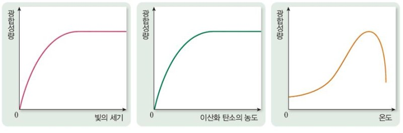
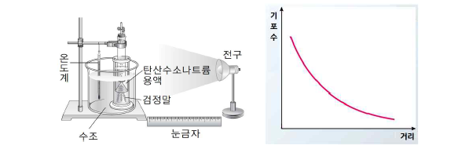

광합성에 영향을 미치는 요인에는 3가지가 있다.빛의 세기, 이산화 탄소의 농도와 온도이다.
빛의 세기에 따라 기포(산소)의 수가 늘어나거나 줄어드는것으로 빛의 세기가 광합성에 영향을 미친다는 것을 알수있다.
빛의 세기와 이산화 탄소의 농도는 증가할때 광합성량도 증가하다 일정량이 되면 광합성량이 동일하다.하지만 온도는 증가할수록 광합성량이 늘다가 어느 지점부터 광합성량이 현저히 떨어지는 것을 볼수있다.